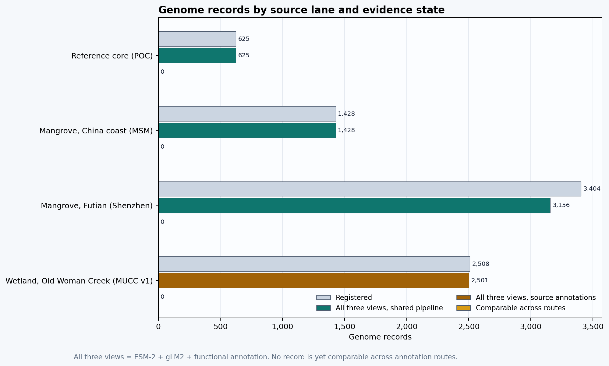
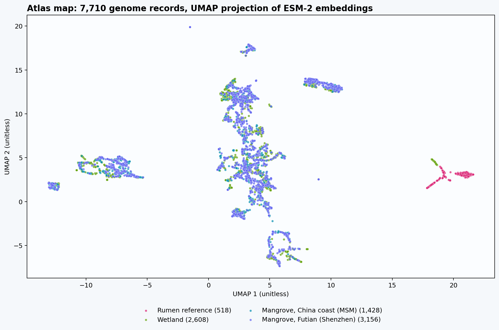
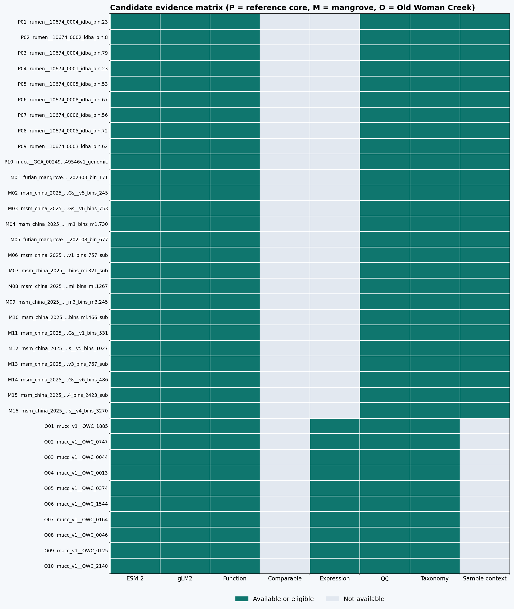

Executive summary
The atlas is a frozen, source-audited map of microbial genomes from methane-relevant environments. It registers 7,965 genome records (metagenome-assembled genomes and their proteomes) from a rumen reference set, freshwater wetlands and mangrove sediments. 7,710 carry all three evidence views: an ESM-2 protein embedding, a gLM2 genomic-context embedding and a functional annotation. The remaining 255 are documented source gaps and stay in the release as explicit rows.
Every record was screened for methane-cycle genes through one of two annotation routes. 5,209 records went through a shared pipeline (accepted KOfam genes and METABOLIC events, with the best MCycDB and SCycDB hits kept separate). 2,501 Old Woman Creek wetland records keep the source's own DRAM annotations and processed expression data. Because the two routes count genes differently, the number of records with a methane mechanism score comparable across routes is 0.
What the atlas supports today: genome-level screening, candidate review with source and quality context, and measurement planning. What it does not support yet: measured methane flux, calibrated site risk, A–E risk tiers or carbon-credit decisions. Those need exact sample links, abundance, environmental covariates, uncertainty and paired flux or process measurements, and none of these is joined to the atlas records yet.
Verified release snapshot
Each figure below is rendered from the machine-checked release ledger; the build stops if any count disagrees with it. Payload availability, shared-schema normalization, comparability across annotation routes and field validation are separate rungs, so their counts differ by design.
Release state: ready. Search indexing: off (noindex).
The EmergentBiome evidence graph
Each genome record sits at the center of an evidence model. Embeddings, functional annotations, genomic context, quality checks and validation requirements attach to it as separate, typed relationships. A neighbor in embedding space is therefore never mistaken for a measured function, and a missing measurement stays visible as a gap.
The queryable implementation covers a 662-record proof of concept. A formal ontology slice, added on 26 September 2026, holds selected evidence for 145 atlas records and is described with the evidence cases on the landing page. Neither yet spans the full atlas.
Evidence model for one genome record. Solid arrows: evidence present today, feeding an evidence card. Dashed amber arrows: the validation path still required, from exact sample links to abundance and environment, then to field or process measurement. The diagram shows structure, not causation.
Evidence integrity and current scope
Before release, the warehouse was checked against its source tables, per-genome outputs, embedding protocols, taxonomy fields and the Old Woman Creek expression tables. The table lists the findings that shape how the atlas can be used.
| Area | Finding | Result | Consequence for use |
|---|---|---|---|
| Evidence states | Complete data and comparable data are separate states. | 7,710 records have all three views. 5,209 carry shared-pipeline screening events, 2,501 carry source annotations, 0 await shared aggregation and 0 are mechanism-comparable across routes. | Every count is reported with its state. No record receives a cross-route methane ranking. |
| Functional counting | Raw annotation-hit rows are not a methane-gene count. | One gene can produce several hits, and hits per protein differ by lane and tool; the source lane uses DRAM terms instead. | Cross-route methane, sulfur and substrate densities and any universal ranking are quarantined. Raw annotation counts appear only as diagnostics until a shared feature table is built and validated. |
| Ranking | A combined index built on raw hit rows tracked lane-specific counting. | Its methane component correlated with the index at Pearson r = 0.770; all of its top 500 records were mangrove. | The index is quarantined. Mangrove candidates are chosen by embedding geometry and QC only. |
| Embedding geometry | Mangrove and wetland genomes stay mutual neighbors; rumen links do not survive standardization. | Mutual top-35 pairs in raw space: 15,728 mangrove–wetland, 1 rumen–wetland, 0 rumen–mangrove. After standardizing each dimension: 15,064, 0 and 0. | Embedding links are neighborhoods to explore. Shared function across sources needs independent validation. |
| Taxonomy | Neighbor pairs often share a phylum, and taxonomy releases differ by source. | 79.2% of usable mutual mangrove–wetland pairs share a phylum after conservative synonym normalization; GTDB release metadata exists only for the reference core. | Part of the neighborhood continuity is taxonomic. Harmonized taxonomy and phylogeny-aware null models come before any functional reading. |
| Old Woman Creek | Expression and field data exist; exact joins do not yet. | 1,358 MAGs have processed methane-gene detection and 1,868 have sulfur-gene detection. Exact sample, environment and flux joins: 0 of 133. | Expression counts as detection support only. Activity levels and flux attribution wait for the exact joins. |
Evidence matures in four stages: payload availability, signal within one protocol, comparability across annotation routes, then sample and ecological validation. Detailed audit tables stay in the internal warehouse; this report shows the resulting evidence states and the validation agenda.
The tri-view evidence contract
A tri-view record carries an ESM-2 embedding, a gLM2 embedding and a functional annotation. Its evidence state records whether those payloads support a common quantitative interpretation. That state travels with the record into the freeze manifest, the candidate cards and the release checks.
| Source lane | Registered | ESM-2 | gLM2 | Functional annotation | All three views | Comparable across routes | Functional contract |
|---|---|---|---|---|---|---|---|
| Reference core (POC) | 625 | 625 | 625 | 625 | 625 | 0 | Shared pipeline; cross-route comparison pending |
| Mangrove, China coast (MSM) | 1,428 | 1,428 | 1,428 | 1,428 | 1,428 | 0 | Shared pipeline; cross-route comparison pending |
| Mangrove, Futian (Shenzhen) | 3,404 | 3,156 | 3,156 | 3,156 | 3,156 | 0 | Shared pipeline; cross-route comparison pending |
| Wetland, Old Woman Creek (MUCC v1) | 2,508 | 2,501 | 2,508 | 2,501 | 2,501 | 0 | Source annotations (DRAM terms, genes, expression); separate contract |
Static version of this chart

gLM2 runs under two protocols and is compared only within a protocol: 5,209 records use one native and one shuffled gene-order window, and 2,508 Old Woman Creek records use ten of each. ESM-2 uses one 650-million-parameter model with a cap of 6,000 proteins per genome; the 121 capped records are flagged.
Source provenance and environmental readiness
Where each source comes from, how precisely its genomes can be placed in a sample today, and the next link needed. Together these gaps set a concrete agenda for abundance mapping, environmental context and field validation.
| Source lane | Records | Source universe | Primary source | Resolution now | Use now | Blocking gap |
|---|---|---|---|---|---|---|
| Rumen reference (POC core) | 518 | 555 rumen proteomes in the proof-of-concept cohort; 518 in the atlas reference core | Stewart et al. 2019, Nature Biotechnology | 555/555 exact ENA analysis-accession matches | Methane reference with exact provenance; source-aware comparison | Animal and sample metadata are cohort-level; any blue-carbon reading needs target-site sample context |
| Wetland reference (POC core) | 107 | 107 wetland Methanoregula proteomes in the proof-of-concept cohort | Bechtold et al. 2025, Nature Communications | 20 with exact NCBI assembly and BioSample; 23 with an Old Woman Creek bin and site; 64 with a source bucket only | Wetland reference with source context; metadata triage | Map every MAG to its BioSample, including source-bucket rows |
| Mangrove, China coast (MSM) | 1,428 | 1,428 deposited MAGs; the source paper reports 966 final MAGs | Pan et al. 2025, GigaScience | 1,428/1,428 with all three views; 82 sediment-sample rows; 71 exact BioSample rows | Mangrove screening and sample-readiness priorities | Assign each MAG to its sample and reconcile 1,428 deposited with 966 final MAGs before sample or site summaries |
| Mangrove, Futian (Shenzhen) | 3,404 | 3,404 registered MAGs: 3,156 complete, 248 documented gaps | Qi et al. 2026, Scientific Data | 3,156/3,404 with all three views; 65 exact sediment-sample metadata rows | Mangrove and mudflat screening; design of time, depth and habitat sampling | Depth-resolved MAG-to-sample assignment, abundance, and flux or process validation |
| Wetland, Old Woman Creek (MUCC v1) | 2,508 | 2,508 checksum-validated archive MAGs; 2,502 pass the paper's quality screen; 7 lack a source protein file | Borton et al. 2026, mSystems | 2,501/2,508 with all three views (source annotations); processed expression for 1,948 MAGs across 133 sample columns; chamber-flux, porewater and tower-flux records staged as site and time context | Wetland reference screening and candidate review under the source-annotation contract | A shared mechanism-feature contract and an authoritative sample, date, depth, environment and flux crosswalk (exact joins: 0 of 133); expression normalization units |
The proof-of-concept crosswalk covers a 662-proteome cohort; the atlas reference core holds 625 of those genomes (518 rumen, 107 wetland) alongside the registered mangrove and Old Woman Creek records. Pending, source-gap, mixed-resolution and unlinked rows stay visible as explicit states.
Three molecular views in one evidence graph
Each view answers a different question, has its own comparison set and carries its own validation gaps. A mechanism claim needs convergent evidence from the right view under a compatible protocol; nearness on a map is only a starting point.
For every record the report shows what evidence exists, its protocol, what each functional count measures and the claim the record supports. A methane mechanism score across routes becomes possible once a shared feature table is built and validated.
ESM-2 geometry with measured limitations
The ESM-2 representation places 7,710 records in a 1,280-dimensional space. Raw cosine similarity in this space is strongly anisotropic: two random records have a mean cosine of 0.9912 (median 0.9936), and the median similarity to the global centroid is 0.9969. Cross-habitat neighbor edges therefore sit in a saturated range, with a median raw cosine of 0.999486. The atlas uses this geometry to navigate neighborhoods and keeps functional and validation evidence separate.
A stricter test counts mutual neighbors: pairs in which each record is among the other's 35 closest across the full atlas. Raw space holds 15,728 mutual mangrove–wetland pairs, 1 rumen–wetland pair and 0 rumen–mangrove pairs. After each dimension is standardized, 15,064 mangrove–wetland pairs remain and no mutual pair involving a rumen genome remains.
A separate, one-way comparison asks which member of the 625-genome reference core (518 rumen, 107 wetland) is closest to each record. Outside the core, 2,434 of 2,501 wetland and 4,475 of 4,584 mangrove records point to a rumen genome, as do all 26 selected candidates outside the core. These matches are weak: the median closest-match similarity outside the core (0.983) is lower than that of two random atlas records (0.994). The core is mostly rumen, so a rumen match nominates a record for review; it does not establish shared biology, transfer between sources or methane flux.
Taxonomy explains part of the mangrove–wetland continuity. Among mutual pairs with usable phylum labels, 60.3% match exactly and 79.2% match after conservative synonym normalization. GTDB release metadata exists only for the reference core, so source and taxonomy-release effects are confounded. Harmonized taxonomy and phylogeny-aware null models are needed before neighborhood enrichment can be read as functional convergence.
UMAP is the default map view because it keeps local neighborhoods readable. The diffusion map is dominated by the separation between the reference core and the other sources, which squeezes most records into a narrow band; t-SNE and PCA are offered for comparison. No projection is evidence on its own, and link membership is always computed in the full representation.
References
- Lin et al. 2023, Science: the ESM-2 protein language model
- Scientific Reports 2025: medium-sized protein language models in transfer learning
- Coifman and Lafon 2006: diffusion maps
- McInnes, Healy and Melville 2018: UMAP
- van der Maaten and Hinton 2008: t-SNE
- Communications Biology 2022: evaluating dimension-reduction methods
- Old Woman Creek wetland microbiome study, mSystems
Molecular niche-space map
Every record with an ESM-2 embedding appears on the map, colored by source lane. Positions come from a two-dimensional projection; links come from the full 1,280-dimensional representation, so switching projections moves points but never changes which links exist.
Gold lines join the 26 selected candidates outside the reference core to their closest reference-core genome. Teal lines are mutual neighbor pairs and gray lines one-way neighbor pairs; the map draws the 2,200 most similar of the 57,193 directed cross-habitat neighbor edges. All of them join mangrove and wetland records, and 99.9% are mutual. Gold rings mark the 36 case-study candidates: select one to read its evidence card, or hover over any point.
Static version of this map

Candidate evidence cards
The candidate layer asks which evidence exists for each review hypothesis, and which comparisons that evidence can support. Reference-core cards (P) keep the ranking used in the proof-of-concept study. Mangrove cards (M) are ranked by embedding geometry and QC. Old Woman Creek cards (O) carry the source's annotations and, where present, processed expression detection.
The matrix and the wheel show availability and eligibility, not strength: ESM-2, gLM2, functional annotation, comparability across routes, expression, QC, taxonomy and sample context. Mechanism strength, activity and any causal link to flux need their own direct evidence.
Candidate evidence matrix
Evidence coverage by candidate group
Each ring is a candidate group, from the reference core (inner) to Old Woman Creek (outer). A wedge's length is the share of that group's cards with the evidence; an empty position means no card in the group has it. Expression exists only in the Old Woman Creek source, so its absence elsewhere means not assayed rather than not expressed.
Static version of the matrix

Functional metric harmonization
A methane-marker density is only meaningful if every source counts genes the same way. Raw annotation-hit rows do not: one gene can produce several hits, and the number of hits per protein differs by source and tool. The shared pipeline therefore records accepted KOfam genes and METABOLIC events as explicit events and keeps the best MCycDB and SCycDB hits separate; MCycDB hits do not enter a methane score until a validated family map exists. Old Woman Creek keeps its own source annotations under a separate contract.
| Source lane | Annotated records | What is counted now | Raw methane hit rows (median) | Proteins (median) | Records with over one raw hit per protein | Public status |
|---|---|---|---|---|---|---|
| Reference core (POC) | 625 | Accepted KOfam genes and METABOLIC events; best MCycDB and SCycDB hits kept separate | 2.0 | 1,945.0 | 0.0% | Screening events only; no cross-route rate |
| Mangrove, China coast (MSM) | 1,428 | Accepted KOfam genes and METABOLIC events; best MCycDB and SCycDB hits kept separate | 4,071.5 | 2,886.0 | 93.1% | Screening events only; no cross-route rate |
| Mangrove, Futian (Shenzhen) | 3,156 | Accepted KOfam genes and METABOLIC events; best MCycDB and SCycDB hits kept separate | 3,777.5 | 2,445.0 | 94.2% | Screening events only; no cross-route rate |
| Wetland, Old Woman Creek (MUCC v1) | 2,501 | Source DRAM terms, plus processed expression detection | 18.0 | 2,568.0 | 0.0% | Source-term density; not comparable across routes |
The raw-row columns are diagnostics that show why raw hits cannot be compared. A combined index built on them is quarantined and plays no part in any ranking here: its methane component tracked the index closely (Pearson r = 0.770), and all of its top 500 records were mangrove, a pattern consistent with counting differences between sources rather than biology. The event tables support screening and audit within one route; they do not authorize a ranking across routes.
Old Woman Creek adds expression evidence and a field-validation lane
The Old Woman Creek wetland lane (MUCC v1) adds processed metatranscriptome detection across 133 source sample columns. Expression support exists for 1,948 MAGs: 1,358 have at least one processed methane-associated expressed-gene row and 1,868 have sulfur-associated rows. These are detection signals from deposited processed tables; comparing activity levels needs expression normalization first.
The warehouse also stages 275 chamber-flux rows (188 valid in the source), 5,280 porewater rows (1,563 valid) and 29,280 half-hourly, gap-filled tower-flux rows. It includes 694 exploratory FlashWeave associations, 126 of which pass the current stability filter, and 3 descriptive WGCNA modules (excluding the unassigned grey module).
The decisive gap is linkage: 0 of 133 sequencing samples have an authoritative exact join to sample, depth, environment and flux, and 133 remain blocked for ecological validation. Until that join exists, the flux records are site and time context, and no MAG, expression signature or network edge can be attributed to a measured flux.
Sample-linkage readiness
This chart groups mangrove records at the most precise environmental context available today. Futian records are grouped by site and month, each context spanning several depth samples with chemistry metadata. MSM records are grouped by the source's sample groups and BioSample sets. No record is yet assigned to a single physical sample.
These groups show a field team where abundance mapping, metadata reconciliation and validation measurements would pay off first. Sample-level methane-risk estimates become possible only after per-genome abundance, exact sample assignment, environmental conditions and flux or process validation are in place.
From molecular evidence to environmental readiness
The atlas becomes decision-grade when validated genome features roll up to physical samples, sites and monitoring periods. Today the reference core and both mangrove sources carry shared-pipeline screening events, and Old Woman Creek carries source annotations and expression detection; none is yet a mechanism score comparable across routes. A defensible sample-level score needs four gated layers.
1. Link molecules to samples
Assign each genome to its sample and site, keep resolution tiers, and show unlinked genomes as explicit states.
Now: site-month or sample-group context for mangroves; 0 of 133 exact joins at Old Woman Creek.
2. Weight by community abundance
Turn genome potential into sample capacity with genome coverage, marker abundance, unbinned functional reads and assembly uncertainty.
Now: no abundance joined to the atlas records.
3. Add environmental conditions
Measured metadata first, modeled covariates second, with every salinity, sulfate, redox, substrate, depth and vegetation field marked by evidence tier.
Now: environmental fields for some mangrove sample contexts, not yet joined to genomes.
4. Calibrate with field evidence
Anchor predictions to chamber flux, dissolved methane, porewater chemistry, incubations or repeated observations, with explicit joins in time and place.
Now: no genome-to-flux pairs.
Field work is how the atlas learns. Sampling across habitats, restoration stages, salinity gradients, depths and seasons would widen the map, expose source-specific blind spots and test candidate signatures under blue-carbon conditions, provided each sample arrives with clean provenance, abundance, environmental measurements and a validation target.
The next operational output is a sample-readiness layer. Once samples are mapped, each would be labeled scoreable, monitor more, needs metadata, needs abundance, needs environmental covariates or needs flux validation. Current records do not support calibrated sample-risk scores; the labels would guide sampling while the evidence grows.
What comes next
The atlas rests on a source-audited warehouse of 7,965 registered genome records across four source lanes. It already supports payload auditing, neighborhood exploration, protocol-aware candidate review, expression-detection queries, metadata-gap priorities and validation-study design.
Its evidence states are explicit: 5,209 records carry shared-pipeline screening events, 2,501 carry Old Woman Creek source annotations, and 0 pass the cross-route comparability gate. Keeping those states separate protects decisions from pipeline artifacts.
The next build should deliver one mechanism-feature table shared by all sources, harmonized taxonomy with phylogeny-aware null models, calibrated gLM2 protocols, exact sample and abundance mappings, and field or process validation with uncertainty. Together these enable cross-route mechanism ranking and calibrated sample-risk modeling.